Advocaat sinds 1988, in het hart van Menen.
Luk Deceuninck staat u bij in een echtscheiding, na een verkeersongeval, bij een bouwgeschil of als de schulden te hoog oplopen. Hij geeft advies, onderhandelt, stelt uw overeenkomsten op en pleit voor alle rechtbanken.
op Google
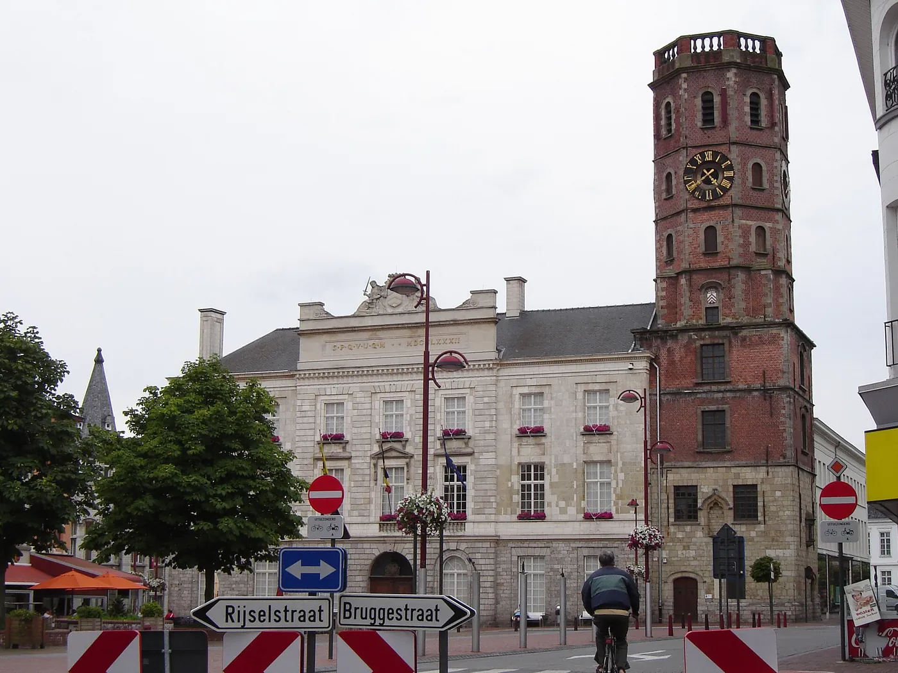
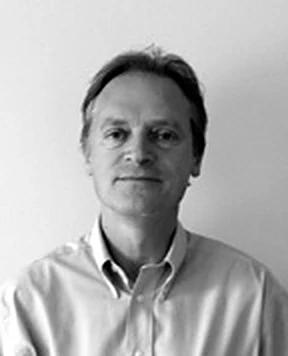
- Sinds 1 oktober 1988advocaat, eerst aan de Kortrijkse balie
- Nederlands, Frans, EngelsHalluin ligt aan de overkant van de Leie
- Kantoorurenvan maandag tot vrijdag
Waarin Luk Deceuninck zich toelegt
Acht domeinen waarin hij zich specialiseerde. Kies er een, dan staat het al ingevuld in het contactformulier.
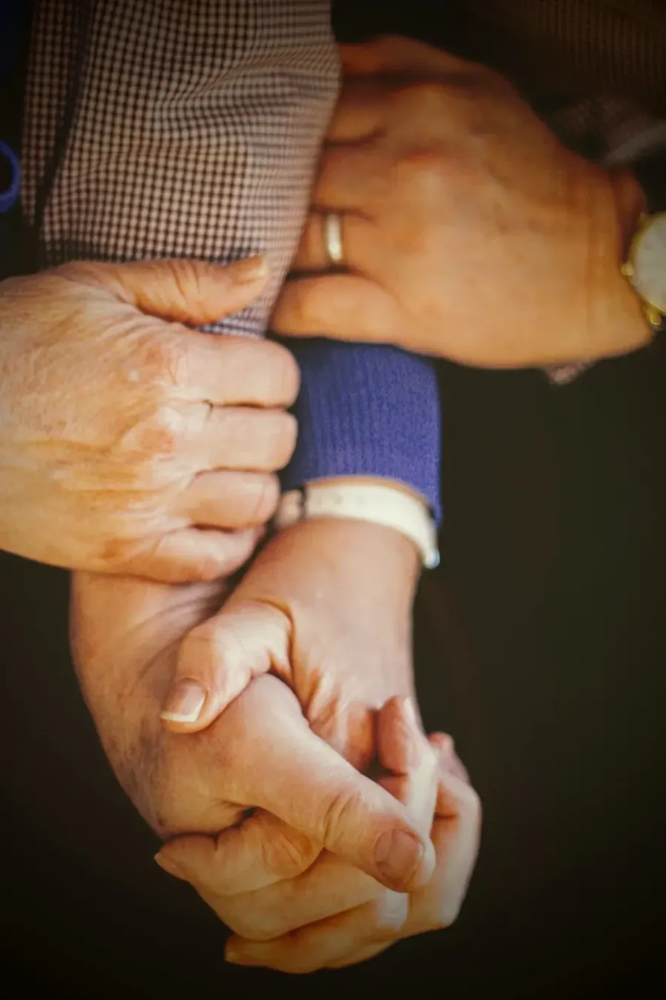
iEchtscheiding
Met onderlinge toestemming of na een conflict. Afspraken over de kinderen, de woning en de verdeling.
Vraag een gesprek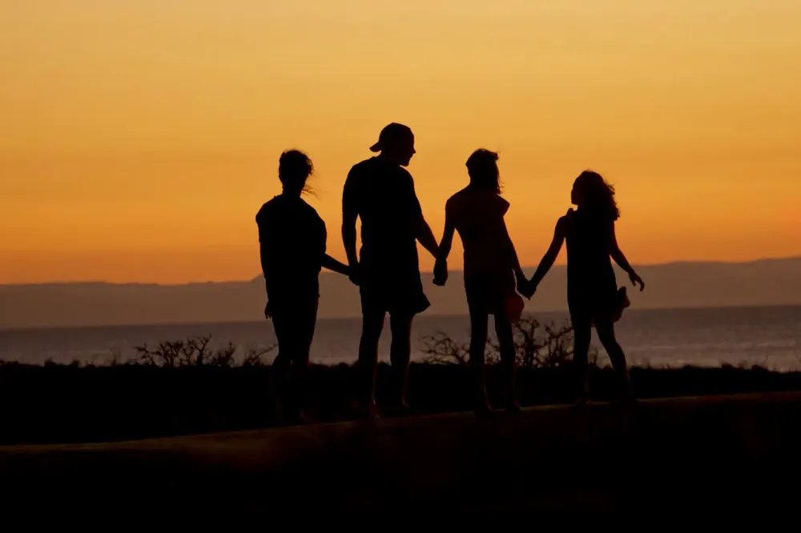
iiPersonen en familie
Onderhoudsgeld, verblijf van de kinderen, afstamming en erfeniskwesties.
Vraag een gesprekVerkeersrecht
Een ongeval, een overtreding of een schadevergoeding die uitblijft. Voor bestuurders, fietsers en voetgangers.
Vraag een gesprek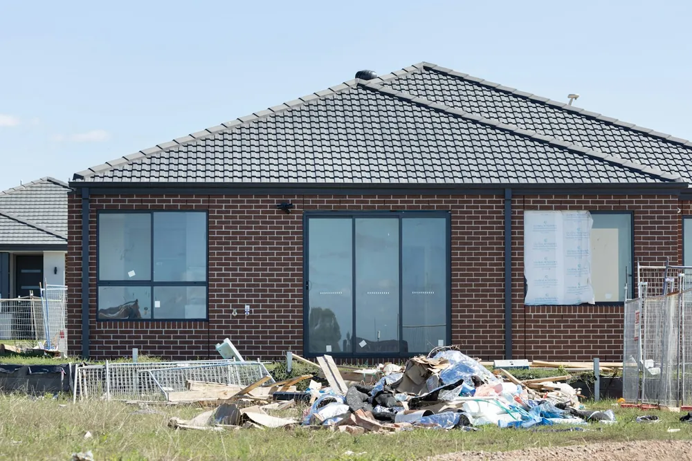
ivBouwgeschillen
Gebreken, vertraging of een aannemer die niet afwerkt. Voor bouwheren en voor aannemers.
Vraag een gesprek v
vOvereenkomsten
Een contract laten opstellen of nalezen voor u tekent, of een afspraak die niet nagekomen wordt.
Vraag een gesprek vi
viHandelsrecht
Voor zelfstandigen en bedrijven: onbetaalde facturen, geschillen met klanten of leveranciers, handelshuur.
Vraag een gesprek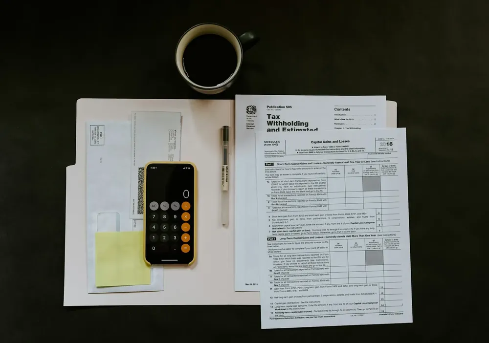
viiFaillissement en schulden
Insolventierecht: faillissementen en schuldbemiddeling, voor particulieren en ondernemers.
Vraag een gesprek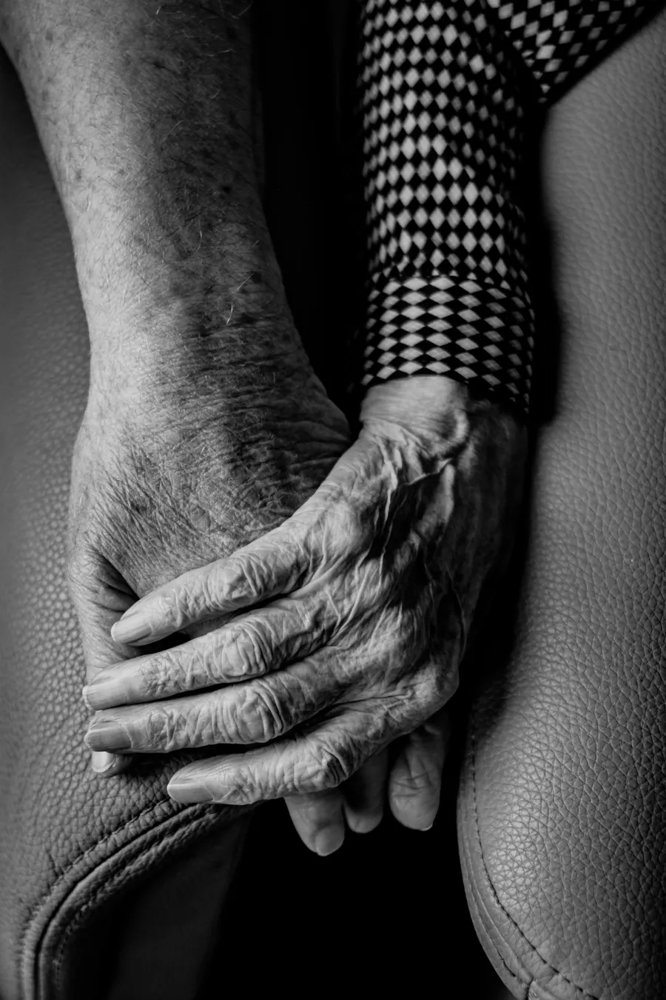
viiiBewindvoering
Bescherming voor wie zijn geld en goederen niet meer zelf kan beheren, en steun voor de familie.
Vraag een gesprekAchtendertig jaar advocaat, bij hetzelfde kantoor
Sinds 1 oktober 1988 is Luk Deceuninck advocaat, eerst aan de Kortrijkse balie en vandaag aan de Balie West-Vlaanderen. Sinds diezelfde dag werkt hij bij het kantoor dat nu Advocatenkantoor Centro heet.
U spreekt er met de advocaat die uw dossier zelf behandelt. Hij geeft advies, onderhandelt met de tegenpartij, stelt overeenkomsten op en pleit als het moet voor de rechtbank. En omdat Menen tegen de Franse grens ligt, kan dat ook in het Frans.
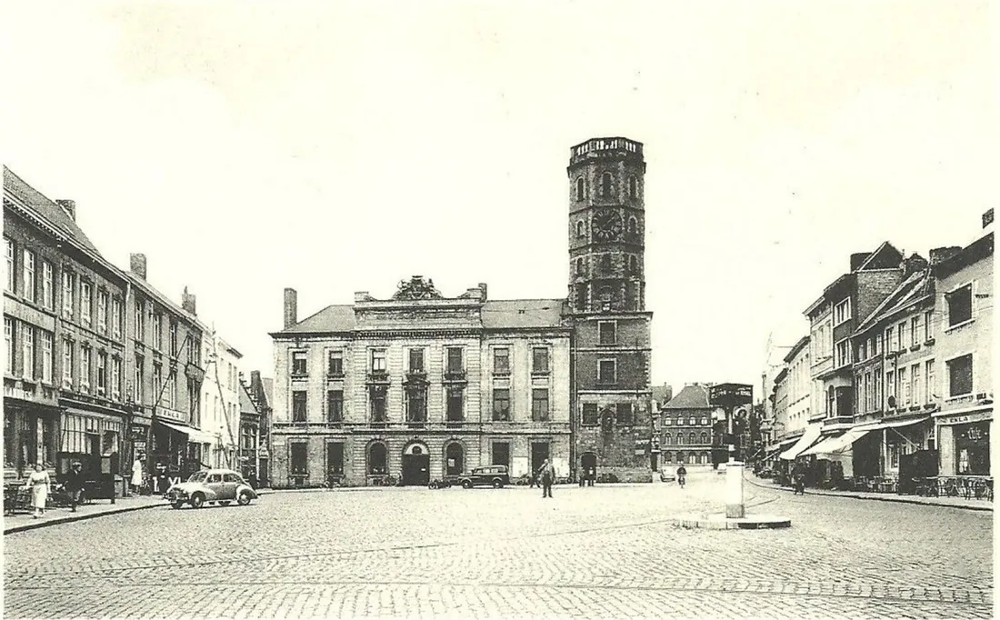
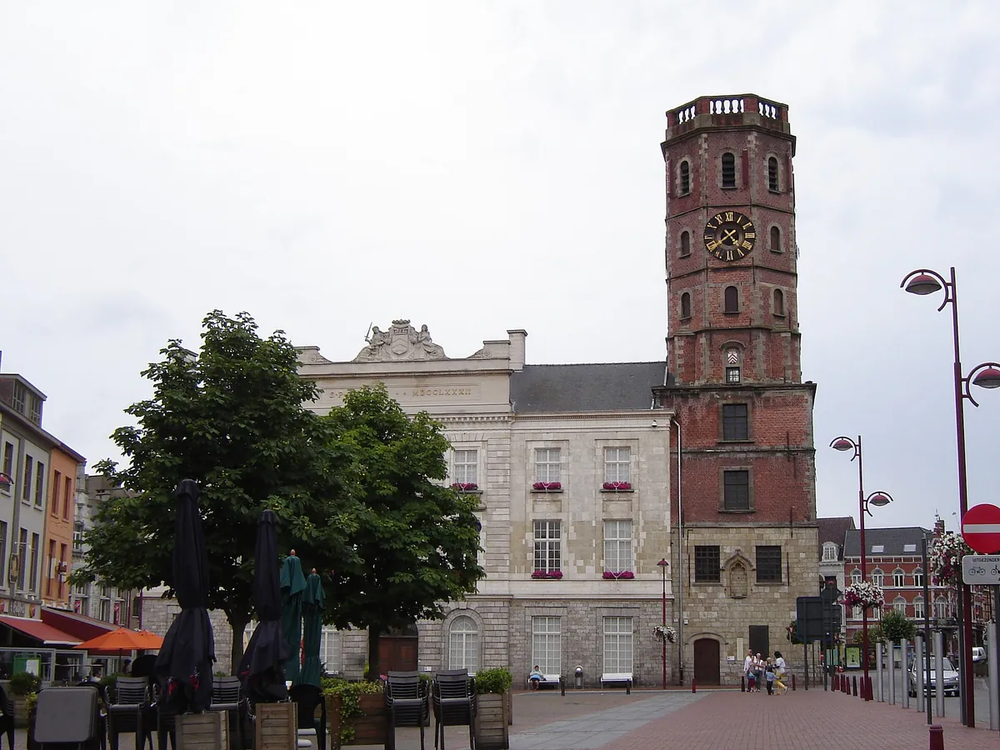
Wat brengt u best mee?
Kies waarover het gaat. U krijgt een lijstje dat u kunt afvinken, afdrukken of meteen meesturen met uw vraag. Hoe vollediger uw papieren, hoe sneller u weet waar u staat.
Van eerste telefoontje tot oplossing
U belt of mailt
Tijdens de kantooruren of per mail. U krijgt een afspraak in de Bruggestraat.
Het gesprek
U vertelt wat er gebeurde, met uw papieren erbij. Daarna hoort u welke wegen er zijn.
De aanpak
Een advies, een onderhandeling met de tegenpartij of een procedure. U beslist mee, met kennis van de kosten.
Drie delen, vooraf uitgelegd
De staat van kosten en ereloon bestaat uit drie delen. Bij de start van uw dossier spreekt u af hoe het ereloon berekend wordt.
De kosten van het kantoor
De vaste werking van het kantoor, en wat specifiek voor uw dossier gebeurt: brieven, kopies, verplaatsingen.
De gerechtskosten
Wat de advocaat voor u betaalt aan derden, zoals de gerechtsdeurwaarder, de griffie of een vertaler. Precies vermeld op de staat.
Het ereloon
Een uurtarief of een vast bedrag voor een bepaalde procedure, eventueel met een bijkomende vergoeding bij een gunstig resultaat.
Voor het uurtarief telt het belang van de zaak, de ervaring en specialisatie van de advocaat en hoe dringend het is.
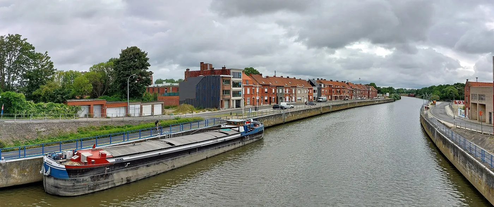
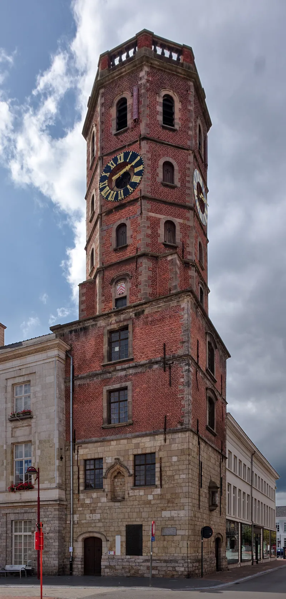
Bruggestraat 55, vlak bij de markt
Het kantoor ligt een paar minuten wandelen van de Grote Markt, met het stadhuis en het belfort. Komt u uit Wervik, Wevelgem of Lauwe, dan bent u er snel.
Route plannenWat u misschien wil weten
Kan ik ook in het Frans of Engels terecht?
Ja. Luk Deceuninck spreekt Nederlands, Frans en Engels. Handig als u net over de grens woont of de andere partij Franstalig is.
Hoe wordt het ereloon berekend?
Bij de start spreekt u af of het om een uurtarief gaat of om een vast bedrag voor een welbepaalde procedure. Daarnaast zijn er de kosten van het kantoor en eventuele gerechtskosten.
Betaalt mijn verzekering mee?
Dat kan. Een rechtsbijstandsverzekering, bijvoorbeeld bij uw autoverzekering of uw familiale, neemt vaak een deel van de kosten op zich. Breng uw polis mee naar het eerste gesprek.
Ik heb schulden die ik niet meer kan betalen. Kan u helpen?
Ja. Schuldbemiddeling en faillissementen horen bij de specialisaties van Luk Deceuninck. In een gesprek bekijkt hij welke oplossing bij uw situatie past.
Wat doet een voorlopig bewindvoerder?
Hij beheert het geld en de goederen van iemand die dat zelf niet meer kan, bijvoorbeeld door ouderdom of ziekte. Ook als familielid kunt u met uw vragen bij het kantoor terecht.
Kan ik zomaar binnenlopen?
Bel liever even op voorhand. Dan maakt Luk Deceuninck tijd voor u en kan hij zich al wat voorbereiden op uw vraag.
Maak een afspraak
Bel tijdens de kantooruren of stuur een mail. U hoort zo snel mogelijk wanneer u langs kunt komen.
| Maandag | 14.00 tot 18.30 |
| Dinsdag | 9.00 tot 18.30 |
| Woensdag | 14.00 tot 18.30 |
| Donderdag | 9.00 tot 18.30 |
| Vrijdag | 14.00 tot 18.30 |
| Zaterdag | gesloten |
| Zondag | gesloten |